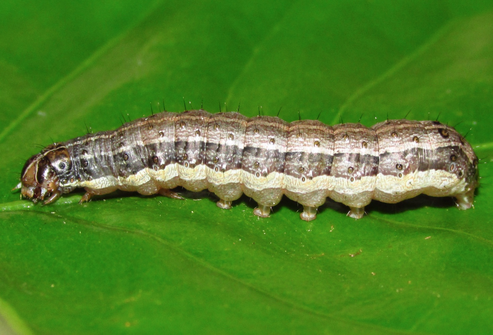
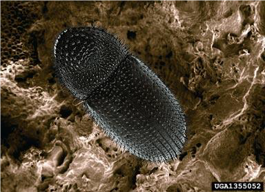
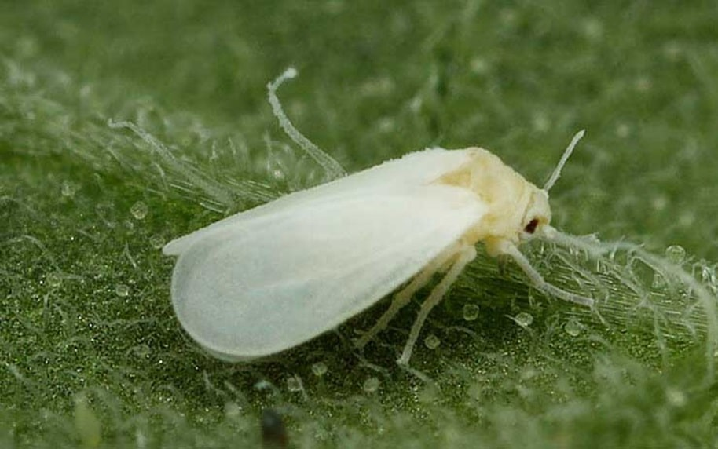
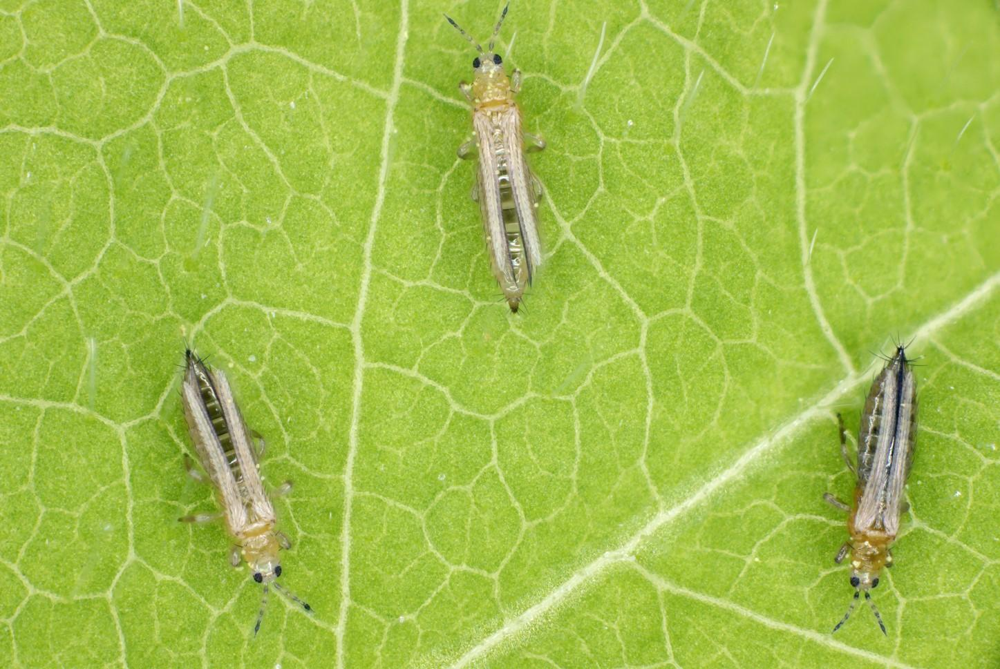
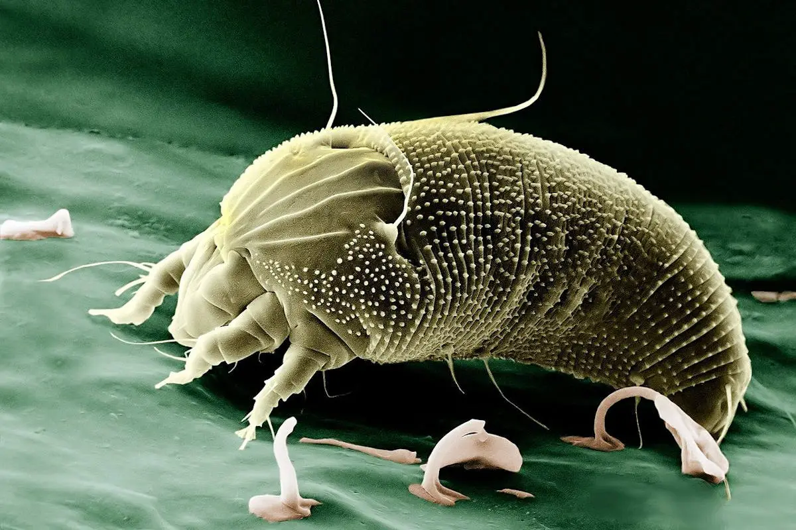
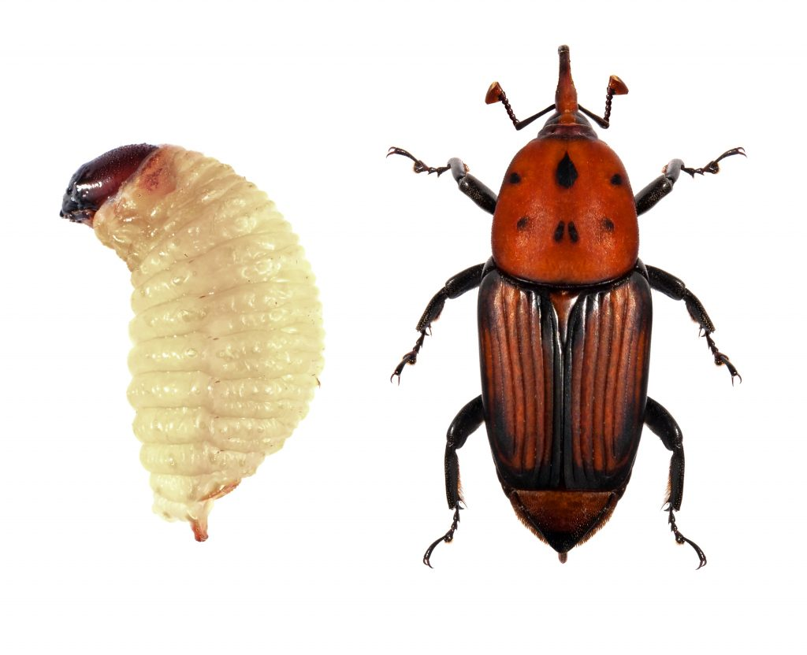

Gusano Cogollero
2.7K PostsPlaga que perfora hojas y cogollos, causando graves daños en cultivos de maíz.
Identifica plagas agrícolas, conoce sus síntomas y descubre métodos efectivos de control.

Plaga que perfora hojas y cogollos, causando graves daños en cultivos de maíz.

Escarabajo que perfora los granos de café, reduciendo la calidad y productividad.

Insecto chupador que debilita las plantas y transmite enfermedades virales.

Pequeños insectos que deforman hojas, flores y frutos de múltiples cultivos.

Organismos microscópicos que provocan manchas, amarillamiento y debilitamiento.

Insecto que afecta tallos, raíces y frutos, generando pérdidas económicas importantes.